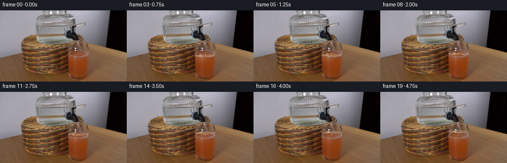
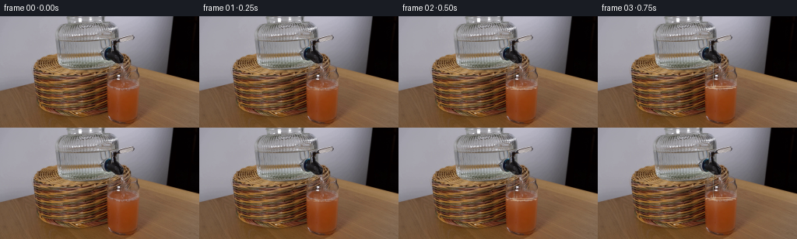

CODING AGENTS AS PIXEL WORLD MODELS
traex/GPT-5.6-Sol · 0184
点击播放 · 原生 RGB 像素
逐轮保存的候选
回放视频、检查图与代码变化。
每份候选均可单独播放。实际图片检查记录在下方工具轨迹中。
候选 01播放与检查图
点击播放 · 原生 RGB 像素


展开代码变化
--- 上一保存版本
+++ 本次保存版本
@@ -0,0 +1,100 @@
+from pathlib import Path
+import numpy as np
+from PIL import Image
+import cv2
+import artifact_io
+
+ROOT=Path(__file__).resolve().parent
+base=np.array(Image.open(ROOT/'first_frame.png').convert('RGB'),dtype=np.uint8)
+H,W=base.shape[:2]
+YY,XX=np.mgrid[:H,:W]
+
+def alpha_blend(im, color, alpha):
+ a=np.clip(alpha,0,1)[...,None]
+ return np.clip(im.astype(np.float32)*(1-a)+np.asarray(color,np.float32)*a,0,255).astype(np.uint8)
+
+def soft_line(x0,y0,x1,y1,width=1.0):
+ vx=x1-x0; vy=y1-y0; d=vx*vx+vy*vy
+ t=np.clip(((XX-x0)*vx+(YY-y0)*vy)/max(d,1e-6),0,1)
+ dist=np.hypot(XX-(x0+t*vx),YY-(y0+t*vy))
+ return np.clip(width+0.7-dist,0,1)
+
+def ellipse(cx,cy,rx,ry,feather=.8):
+ d=np.sqrt(((XX-cx)/rx)**2+((YY-cy)/ry)**2)
+ return np.clip((1+feather/rx-d)/(feather/rx),0,1)
+
+frames=[]
+for k in range(20):
+ if k==0:
+ frames.append(base.copy()); continue
+ # Locked camera: every frame starts from the exact source photograph.
+ im=base.copy()
+ # Tap opens just after the first frame, then settles into a constant pour.
+ onset=np.clip((k-.25)/2.2,0,1)
+ # The source composition places the dark dispenser tap at x~147 and the
+ # grapefruit drink glass immediately below/right (x 138..178).
+ sx=148.2 + .30*np.sin(k*1.71)
+ top=57.0
+ surface=94.0-min(k*0.79,14.0) # drink rises as water is added
+ bottom=surface+1.2
+ # stream (slightly wavering narrow translucent water column)
+ cx=sx + .50*np.sin(k*.92)
+ wav=.45*np.sin(YY*.48+k*1.3)
+ core=np.clip(1.55-np.abs(XX-cx-wav),0,1)
+ vertical=np.clip((YY-top)/2.0,0,1)*np.clip((bottom-YY)/2.0,0,1)
+ stream=core*vertical*onset
+ # refractive dark rim, pale core and intermittent specular thread
+ im=alpha_blend(im,(54,65,68),stream*.19)
+ highlight=np.clip(.63-np.abs(XX-(cx-.35)-.18*np.sin(YY*.7+k)),0,1)*vertical*onset
+ im=alpha_blend(im,(220,231,226),highlight*.55)
+ # fine edge on right side gives transparent stream definition
+ rim=np.clip(.48-np.abs(XX-(cx+1.55+wav)),0,1)*vertical*onset
+ im=alpha_blend(im,(66,78,76),rim*.28)
+
+ # Inside glass: a restrained, perspective-shaped dilution region. The
+ # grapefruit juice remains orange, becoming paler only near the impact.
+ glass=((XX>=138+(YY-82)*.018)&(XX<=178-(YY-82)*.045)&(YY>=surface)&(YY<=126))
+ depth=np.clip((YY-surface)/17,0,1)
+ radial=np.exp(-((XX-149.5)/(10+depth*5))**2)
+ dilution=glass*radial*(1-depth)*(.085+.10*onset)
+ im=alpha_blend(im,(191,143,91),dilution)
+
+ # New liquid surface: thin elliptical water/juice meniscus, rising smoothly.
+ men=ellipse(157.5,surface,19.5,2.15)
+ inner=ellipse(157.5,surface+.15,17.8,1.25)
+ ring=np.clip(men-inner,0,1)*onset
+ im=alpha_blend(im,(205,157,106),men*.20*onset)
+ im=alpha_blend(im,(235,200,160),ring*.43)
+ # dark far edge and bright near edge of the meniscus
+ far=np.exp(-((YY-(surface-1.05))/0.52)**2)*np.clip(1-((XX-157.5)/18.5)**2,0,1)
+ far*= (YY<surface)*onset
+ im=alpha_blend(im,(104,67,44),far*.20)
+ near=np.exp(-((YY-(surface+1.05))/0.45)**2)*np.clip(1-((XX-157.5)/18.0)**2,0,1)
+ near*= (YY>surface)*onset
+ im=alpha_blend(im,(245,190,132),near*.28)
+
+ # Impact dimple and physically modest splash/ripples.
+ impact=ellipse(cx,surface-.15,2.5,1.05)*onset
+ im=alpha_blend(im,(232,218,187),impact*.34)
+ for j,(rr,phase) in enumerate(((5.5,.0),(10.5,1.6),(15.0,3.1))):
+ amp=.5+.5*np.sin(k*1.7+phase)
+ outer=ellipse(cx,surface,rr,1.0+j*.18)
+ inner=ellipse(cx,surface,rr-1.1,.48+j*.10)
+ ripple=np.clip(outer-inner,0,1)*amp*onset
+ im=alpha_blend(im,(225,183,137),ripple*(.20-j*.035))
+ # tiny deterministic droplets around the impact, never leaving the setup
+ for j in range(3):
+ phase=k*1.55+j*2.19
+ dx=(j-1)*2.2+np.sin(phase)*.55
+ rise=1.3+2.1*abs(np.sin(phase))
+ droplet=ellipse(cx+dx,surface-rise,.60,.85)
+ im=alpha_blend(im,(214,222,210),droplet*.28*onset)
+
+ # A subtle bright contact glint where the stream leaves the glass spout.
+ glint=ellipse(sx,top,2.1,1.0)*onset
+ im=alpha_blend(im,(207,213,210),glint*.23)
+ frames.append(im)
+
+frames=np.stack(frames).astype(np.uint8)
+assert np.array_equal(frames[0],base)
+artifact_io.save(frames,ROOT)
可观测工具轨迹
实际执行的命令与返回图片。
命令 1exit 0
/bin/bash -lc "cat prompt.txt && printf '\\n---RULES---\\n' && cat GENERATION_RULES.md"
命令 2exit 1
/bin/bash -lc "find . -maxdepth 2 -type f -printf '%p\\n' | sort && printf '\\nTOOLS\\n' && command -v ffmpeg && python3 - <<'PY' import importlib.util for x in ['PIL','cv2','numpy','scipy','imageio']: print(x, bool(importlib.util.find_spec(x))) PY"
命令 3exit 0
/bin/bash -lc "python3 - <<'PY'
import importlib.util
for x in ['PIL','cv2','numpy','scipy','imageio']:
print(x, bool(importlib.util.find_spec(x)))
from PIL import Image
im=Image.open('first_frame.png').convert('RGB')
print(im.size)
PY"命令 4exit 0
/bin/bash -lc "python3 - <<'PY'
import cv2,numpy as np
im=cv2.imread('first_frame.png')[:,:,::-1]
# kmeans deterministic
x=im.reshape(-1,3).astype(np.float32)
crit=(cv2.TERM_CRITERIA_EPS+cv2.TERM_CRITERIA_MAX_ITER,50,.2)
_,lab,cen=cv2.kmeans(x,12,None,crit,5,cv2.KMEANS_PP_CENTERS)
counts=np.bincount(lab[:,0],minlength=12)
order=np.argsort(-counts)
print('colors frequency:')
for j in order: print(j,counts[j],np.round(cen[j]).astype(int))
L=lab.reshape(144,256)
# map each 4x4 mode and chars cluster identity sorted dark-ish custom
chars='0123456789AB'
for y in range(0,144,4):
s=''
for xx in range(0,256,4):
z=L[y:y+4,xx:xx+4].ravel(); q=np.bincount(z,minlength=12).argmax();s+=chars[q]
print(s)
PY"命令 5exit 0
/bin/bash -lc "python3 - <<'PY'
import cv2,numpy as np
im=cv2.imread('first_frame.png')
g=cv2.cvtColor(im,cv2.COLOR_BGR2GRAY)
# print sobel, block 2x2 max, threshold
s=np.hypot(cv2.Sobel(g,cv2.CV_32F,1,0),cv2.Sobel(g,cv2.CV_32F,0,1))
for y in range(0,144,3):
o=''
for x in range(0,256,3):
v=np.percentile(s[y:y+3,x:x+3],80)
o += ' ' if v<20 else '.' if v<45 else ':' if v<90 else '*' if v<160 else '#'
print(o.rstrip())
PY"命令 6exit 0
/bin/bash -lc "python3 - <<'PY'
from PIL import Image
import numpy as np, cv2
im=np.array(Image.open('first_frame.png').convert('RGB'))
# 2x2 mean classifier
for y in range(0,144,2):
out=''
for x in range(0,256,2):
a=im[y:y+2,x:x+2].mean((0,1)); r,g,b=a; M=max(a);m=min(a)
if M<15:c='@'
elif M<35:c='#'
elif M<60:c='K'
elif M<82:c='k'
elif M-m<8:
c='w' if M>180 else 'G' if M>135 else 'g' if M>95 else 'd'
elif r>b*1.3 and r>g*1.12:
c='O' if r>150 else 'o' if r>110 else 'b'
elif r>b*1.15 and r>g*1.02:c='t' # tan
else:c='.'
out+=c
print(out)
PY"命令 7exit 0
/bin/bash -lc "python3 - <<'PY'
import cv2, numpy as np
im=cv2.imread('first_frame.png')[:,:,::-1]
# Grid 8x8 means, print hex approximate grouped every pixel
for y in range(0,144,8):
print('Y',y)
for x in range(0,256,8):
a=im[y:y+8,x:x+8].mean((0,1)).astype(int)
print(f'{x}:{a[0]:02x}{a[1]:02x}{a[2]:02x}',end=' ')
print()
# canny contours bbox area
c=cv2.Canny(im,60,140)
cts,_=cv2.findContours(c,cv2.RETR_EXTERNAL,cv2.CHAIN_APPROX_SIMPLE)
print('\\ncontours')
for q in sorted(cts,key=cv2.contourArea,reverse=True)[:20]:
print(cv2.boundingRect(q),cv2.contourArea(q))
PY"命令 8exit 0
/bin/bash -lc "python3 - <<'PY'
import cv2,numpy as np
im=cv2.imread('first_frame.png')
g=cv2.cvtColor(im,cv2.COLOR_BGR2GRAY)
lines=cv2.HoughLinesP(cv2.Canny(g,40,100),1,np.pi/180,threshold=15,minLineLength=10,maxLineGap=3)
for l in sorted(lines[:,0],key=lambda q:(q[1],q[0])): print(tuple(l), 'len',round(np.hypot(l[2]-l[0],l[3]-l[1]),1))
PY"命令 9exit 0
/bin/bash -lc "python3 - <<'PY'
from PIL import Image
import numpy as np,cv2
im=np.array(Image.open('first_frame.png').convert('RGB'))
g=cv2.cvtColor(im,cv2.COLOR_RGB2GRAY)
s=np.hypot(cv2.Sobel(g,cv2.CV_32F,1,0),cv2.Sobel(g,cv2.CV_32F,0,1))
# 1 cell=2pix; chars based mean luminosity/chroma, uppercase marks edge
for y in range(40,144,2):
z=''
for x in range(110,201,2):
a=im[y:y+2,x:x+2].mean((0,1));r,gg,b=a; lum=a.mean(); e=s[y:y+2,x:x+2].max()
if lum<20:c='@'
elif lum<45:c='#'
elif lum<70:c='k'
elif r>gg*1.35 and r>b*1.8:c='R'
elif r>gg*1.15 and r>b*1.4:c='o'
elif lum<95:c='d'
elif lum<125:c='m'
elif lum<150:c='g'
elif lum<175:c='l'
else:c='w'
if e>120 and c not in '@#R': c='|'
z+=c
print(f'{y:03}',z)
PY"命令 10exit 1
/bin/bash -lc "python3 - <<'PY'
import cv2,numpy as np
im=cv2.imread('first_frame.png');g=cv2.cvtColor(im,cv2.COLOR_BGR2GRAY)
sx=np.abs(cv2.Sobel(g,cv2.CV_32F,1,0)); sy=np.abs(cv2.Sobel(g,cv2.CV_32F,0,1))
# edge side scores candidate rectangles
for x1 in range(30,181):
for x2 in range(x1+15,min(x1+70,210)):
for y1 in range(40,111,5):
y2=min(142,y1+55)
ss=sx[y1:y2,x1-1:x1+2].mean()+sx[y1:y2,x2-1:x2+2].mean()+sy[y1-2:y1+2,x1:x2].mean()+sy[y2-2:y2+2,x1:x2].mean()
# save
if ss>300: print(ss,x1,x2,y1,y2)
PY | sort -nr | head -30"命令 11exit 0
/bin/bash -lc 'cat artifact_io.py'
命令 12exit 0
/bin/bash -lc "python3 - <<'PY'
import cv2,numpy as np
im=cv2.imread('first_frame.png'); g=cv2.cvtColor(im,cv2.COLOR_BGR2GRAY)
gx=np.abs(cv2.Sobel(g,cv2.CV_32F,1,0));gy=np.abs(cv2.Sobel(g,cv2.CV_32F,0,1))
for y in range(40,140):
vals=[]
for a,b in [(40,90),(80,130),(120,150),(135,180),(150,200)]: vals.append(round(gy[y,a:b].mean()))
if max(vals)>100:print(y, vals)
print('vertical x')
for x in range(40,200):
vals=[]
for a,b in [(40,80),(70,100),(90,130),(110,144)]: vals.append(round(gx[a:b,x].mean()))
if max(vals)>120:print(x, vals)
PY"命令 13exit 0
/bin/bash -lc "python3 - <<'PY'
from PIL import Image
import numpy as np
im=np.array(Image.open('first_frame.png'))
for y in range(55,141,2):
m=(im[y,:,0]-im[y,:,1]>35)&(im[y,:,0]-im[y,:,2]>50)&(im[y,:,0]>90)
# runs
xx=np.flatnonzero(m); runs=[]
if len(xx):
s=xx[0];p=s
for x in xx[1:]:
if x>p+1:runs.append((s,p));s=x
p=x
runs.append((s,p))
print(y,[r for r in runs if r[1]>=110])
PY"命令 14exit 0
/bin/bash -lc "python3 - <<'PY'
from PIL import Image
import numpy as np
im=np.array(Image.open('first_frame.png'))
for y in range(52,131,2):
print(y, ['%3d,%3d,%3d'%tuple(im[y,x]) for x in [132,136,139,142,146,150,155,160,165,170,175,178,182]])
PY"命令 15exit 0
/bin/bash -lc "cat > generate.py <<'PY'
from pathlib import Path
import numpy as np
from PIL import Image
import cv2
import artifact_io
ROOT=Path(__file__).resolve().parent
base=np.array(Image.open(ROOT/'first_frame.png').convert('RGB'),dtype=np.uint8)
H,W=base.shape[:2]
YY,XX=np.mgrid[:H,:W]
def alpha_blend(im, color, alpha):
a=np.clip(alpha,0,1)[...,None]
return np.clip(im.astype(np.float32)*(1-a)+np.asarray(color,np.float32)*a,0,255).astype(np.uint8)
def soft_line(x0,y0,x1,y1,width=1.0):
vx=x1-x0; vy=y1-y0; d=vx*vx+vy*vy
t=np.clip(((XX-x0)*vx+(YY-y0)*vy)/max(d,1e-6),0,1)
dist=np.hypot(XX-(x0+t*vx),YY-(y0+t*vy))
return np.clip(width+0.7-dist,0,1)
def ellipse(cx,cy,rx,ry,feather=.8):
d=np.sqrt(((XX-cx)/rx)**2+((YY-cy)/ry)**2)
return np.clip((1+feather/rx-d)/(feather/rx),0,1)
frames=[]
for k in range(20):
if k==0:
frames.append(base.copy()); continue
# Locked camera: every frame starts from the exact source photograph.
im=base.copy()
# Tap opens just after the first frame, then settles into a constant pour.
onset=np.clip((k-.25)/2.2,0,1)
# The source composition places the dark dispenser tap at x~147 and the
# grapefruit drink glass immediately below/right (x 138..178).
sx=148.2 + .30*np.sin(k*1.71)
top=57.0
surface=94.0-min(k*0.79,14.0) # drink rises as water is added
bottom=surface+1.2
# stream (slightly wavering narrow translucent water column)
cx=sx + .50*np.sin(k*.92)
wav=.45*np.sin(YY*.48+k*1.3)
core=np.clip(1.55-np.abs(XX-cx-wav),0,1)
vertical=np.clip((YY-top)/2.0,0,1)*np.clip((bottom-YY)/2.0,0,1)
stream=core*vertical*onset
# refractive dark rim, pale core and intermittent specular thread
im=alpha_blend(im,(54,65,68),stream*.19)
highlight=np.clip(.63-np.abs(XX-(cx-.35)-.18*np.sin(YY*.7+k)),0,1)*vertical*onset
im=alpha_blend(im,(220,231,226),highlight*.55)
# fine edge on right side gives transparent stream definition
rim=np.clip(.48-np.abs(XX-(cx+1.55+wav)),0,1)*vertical*onset
im=alpha_blend(im,(66,78,76),rim*.28)
# Inside glass: a restrained, perspective-shaped dilution region. The
# grapefruit juice remains orange, becoming paler only near the impact.
glass=((XX>=138+(YY-82)*.018)&(XX<=178-(YY-82)*.045)&(YY>=surface)&(YY<=126))
depth=np.clip((YY-surface)/17,0,1)
radial=np.exp(-((XX-149.5)/(10+depth*5))**2)
dilution=glass*radial*(1-depth)*(.085+.10*onset)
im=alpha_blend(im,(191,143,91),dilution)
# New liquid surface: thin elliptical water/juice meniscus, rising smoothly.
men=ellipse(157.5,surface,19.5,2.15)
inner=ellipse(157.5,surface+.15,17.8,1.25)
ring=np.clip(men-inner,0,1)*onset
im=alpha_blend(im,(205,157,106),men*.20*onset)
im=alpha_blend(im,(235,200,160),ring*.43)
# dark far edge and bright near edge of the meniscus
far=np.exp(-((YY-(surface-1.05))/0.52)**2)*np.clip(1-((XX-157.5)/18.5)**2,0,1)
far*= (YY<surface)*onset
im=alpha_blend(im,(104,67,44),far*.20)
near=np.exp(-((YY-(surface+1.05))/0.45)**2)*np.clip(1-((XX-157.5)/18.0)**2,0,1)
near*= (YY>surface)*onset
im=alpha_blend(im,(245,190,132),near*.28)
# Impact dimple and physically modest splash/ripples.
impact=ellipse(cx,surface-.15,2.5,1.05)*onset
im=alpha_blend(im,(232,218,187),impact*.34)
for j,(rr,phase) in enumerate(((5.5,.0),(10.5,1.6),(15.0,3.1))):
amp=.5+.5*np.sin(k*1.7+phase)
outer=ellipse(cx,surface,rr,1.0+j*.18)
inner=ellipse(cx,surface,rr-1.1,.48+j*.10)
ripple=np.clip(outer-inner,0,1)*amp*onset
im=alpha_blend(im,(225,183,137),ripple*(.20-j*.035))
# tiny deterministic droplets around the impact, never leaving the setup
for j in range(3):
phase=k*1.55+j*2.19
dx=(j-1)*2.2+np.sin(phase)*.55
rise=1.3+2.1*abs(np.sin(phase))
droplet=ellipse(cx+dx,surface-rise,.60,.85)
im=alpha_blend(im,(214,222,210),droplet*.28*onset)
# A subtle bright contact glint where the stream leaves the glass spout.
glint=ellipse(sx,top,2.1,1.0)*onset
im=alpha_blend(im,(207,213,210),glint*.23)
frames.append(im)
frames=np.stack(frames).astype(np.uint8)
assert np.array_equal(frames[0],base)
artifact_io.save(frames,ROOT)
PY
python3 generate.py
python3 - <<'PY'
import numpy as np
from PIL import Image
z=np.load('pixels.npz')['pixels']; print(z.shape,z.dtype)
a=np.array(Image.open('first_frame.png').convert('RGB'));b=np.array(Image.open('frames/00.png'));print('first exact',np.array_equal(a,b))
for k in range(20):
q=np.array(Image.open(f'frames/{k:02}.png'));print(k,np.sum(np.any(q"'!=a,2)),np.abs(q.astype(int)-a).mean())
PY'保存候选 1 份；完成命令 15 次；可验证图片返回 0 张。原始 API 响应与完整日志保留在本地。